进入正题，线性代数是一门大学必修课，但是相信很多人考完试后都忘的差不多了（包括笔者我），所以这里主要搭建一个整体的系统框架，加强对线性代数的理解和应用。笔者主要是总结网络上各种信息以及加入本人的一点理解，如果有疏漏，还望通知本人，联系QQ为【1520498543】
矩阵的直观理解
发表于：2017-9-8
国内很多教材都是从行列式讲起，但我觉得矩阵其实更直观些，更容易了解线性代数是做什么的，故我从矩阵开始讲起。
首先来看一组方程组
常规算法是直接消元分别求x和y，在这里我们先把它当成一个矩阵看待，以上公式可以转化成AX=b的矩阵相乘形式
首先来看一组方程组
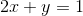
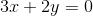
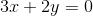
常规算法是直接消元分别求x和y，在这里我们先把它当成一个矩阵看待，以上公式可以转化成AX=b的矩阵相乘形式
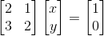
AX=b的解？
发表于：2017-9-10
假定给你一个AX=b的方程，其有多少个解？0个？1个？还是无数个？
我们将该问题转换成上一节介绍的按列分割矩阵，也就是问，矩阵A的所有列向量，是否铺满了b的所有维度？
说的通透点，如果b=(x1,x2)，那么b的维度就是2维平面，如果b=(x1,x2,x3)，那么b的维度就是3维空间，如果b=(x1,x2,……,xn)，那么b的维度就是n维空间。
首先来看2维平面的情况，如果矩阵A有两条线性不相关的列向量，那么不就能铺满一个2维平面？
我们将该问题转换成上一节介绍的按列分割矩阵，也就是问，矩阵A的所有列向量，是否铺满了b的所有维度？
说的通透点，如果b=(x1,x2)，那么b的维度就是2维平面，如果b=(x1,x2,x3)，那么b的维度就是3维空间，如果b=(x1,x2,……,xn)，那么b的维度就是n维空间。
首先来看2维平面的情况，如果矩阵A有两条线性不相关的列向量，那么不就能铺满一个2维平面？
番外篇 · 聊聊行秩？=列秩
发表于：2017-9-10
为什么行秩=列秩？
我们现将问题简化下，如果有一个3*3的矩阵A，已知其列空间存在线性相关，去掉后只剩下两个向量，那么列空间大小为2维，列秩为2，那么行秩等于多少？
设矩阵A为：
那么存在一组(x,y)使：
我们现将问题简化下，如果有一个3*3的矩阵A，已知其列空间存在线性相关，去掉后只剩下两个向量，那么列空间大小为2维，列秩为2，那么行秩等于多少？
设矩阵A为：
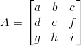
那么存在一组(x,y)使：
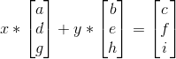
消元法？矩阵转换？
发表于：2017-9-13
我们继续研究AX=b的问题。
相信各位高中或初中就学过多元函数求解，其实用的都是消元法。只不过这里的表现形式从方程组变成矩阵而已。
我们先来看一组方程式:
其矩阵表示形式AX=b如下：
那么要求这个方程组，我们首先想到的就是消元。
相信各位高中或初中就学过多元函数求解，其实用的都是消元法。只不过这里的表现形式从方程组变成矩阵而已。
我们先来看一组方程式:
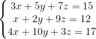
其矩阵表示形式AX=b如下：
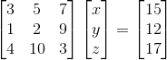
那么要求这个方程组，我们首先想到的就是消元。
PA=LU？
发表于：2017-9-11
PA=LU，我们先来看下P是什么？
P矩阵全称为Permutation Matrix，也就是置换矩阵。置换矩阵左乘矩阵A，是对A进行行序变换，右乘矩阵A，是对A进行列序变换：
那PA代表的是一个通过转换行序后能够通过消元法变成一个上三角矩阵的矩阵。这句话有点拗口，但是有做过矩阵消元的人都知道，有时比如第一行首位就为0，这样一开始就无法消元，所以得通过转换行序，将首位有数值的行给提到第一行上来后再进行消元动作，所以PA代表的就是将行序确定好能够从上往下消元的矩阵。
那接下来，L代表的是Lower Triangular Matrix(下三角矩阵)，就是对角线上方都为0的矩阵；U代表Upper Triangular Matrix(上三角矩阵)，就是对角线下方都为0的矩阵。那么为什么等式能够成立？
回到之前我们一直所讲的消元，矩阵A通过左乘各类变换矩阵后，最终能够得到一个上三角的矩阵，这样消元就结束了，接下去就可以直接求解了。下面讲个例子。
P矩阵全称为Permutation Matrix，也就是置换矩阵。置换矩阵左乘矩阵A，是对A进行行序变换，右乘矩阵A，是对A进行列序变换：
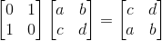
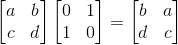
那PA代表的是一个通过转换行序后能够通过消元法变成一个上三角矩阵的矩阵。这句话有点拗口，但是有做过矩阵消元的人都知道，有时比如第一行首位就为0，这样一开始就无法消元，所以得通过转换行序，将首位有数值的行给提到第一行上来后再进行消元动作，所以PA代表的就是将行序确定好能够从上往下消元的矩阵。
那接下来，L代表的是Lower Triangular Matrix(下三角矩阵)，就是对角线上方都为0的矩阵；U代表Upper Triangular Matrix(上三角矩阵)，就是对角线下方都为0的矩阵。那么为什么等式能够成立？
回到之前我们一直所讲的消元，矩阵A通过左乘各类变换矩阵后，最终能够得到一个上三角的矩阵，这样消元就结束了，接下去就可以直接求解了。下面讲个例子。
置换矩阵？转置矩阵？对称矩阵？
发表于：2017-9-12
本章内容较短，主要只是简要介绍下相关性质。
首先看下置换矩阵。通过之前章节相信各位对置换矩阵有了一定的了解，那么这时有一个问题，如果只能交换行序，那么对于一个n*n的矩阵，其总共有多少种交换方式？（可以看成是一种排序问题）
结果是n!（n的阶层）种。
换句话说，也就是有n!个置换矩阵存在，而由n!个置换矩阵组成的这组矩阵集，有个很有意思的现象，其内部的各个矩阵无论怎么相乘，或者取逆矩阵，结果都能在这组矩阵集里找到对应的解。换句话说，该矩阵集包含了该矩阵所有的行置换情况。
另外，置换矩阵还有一个重要的性质，其转置等于其逆矩阵！
举个例子证明下，对于一个2,3行置换后3,4行再转换的置换矩阵P1：
首先看下置换矩阵。通过之前章节相信各位对置换矩阵有了一定的了解，那么这时有一个问题，如果只能交换行序，那么对于一个n*n的矩阵，其总共有多少种交换方式？（可以看成是一种排序问题）
结果是n!（n的阶层）种。
换句话说，也就是有n!个置换矩阵存在，而由n!个置换矩阵组成的这组矩阵集，有个很有意思的现象，其内部的各个矩阵无论怎么相乘，或者取逆矩阵，结果都能在这组矩阵集里找到对应的解。换句话说，该矩阵集包含了该矩阵所有的行置换情况。
另外，置换矩阵还有一个重要的性质，其转置等于其逆矩阵！
举个例子证明下，对于一个2,3行置换后3,4行再转换的置换矩阵P1：
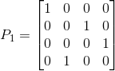
番外篇 · 向量空间
发表于：2017-9-12
我们先来看下一个符号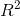，其代表了一个二维的空间，其中空间中的值都是实数，你也可以看作是xy平面。同理，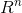代表了一个n维的实数空间。
我们接下来看下空间的定义，什么才能叫作向量空间？
当空间中的任意向量相加或数乘（实数乘以向量）运算时，结果仍然在原来的空间里，这才能叫作向量空间，其是一个“封闭”的空间。同时有一点非常重要，向量空间永远都能经过零点（或零向量）。因为数乘运算时，你完全可以乘以0，得到的结果也一定是零点（或零向量）。
比如对于一个二维向量空间，其可以想象成一个xy平面，而平面上任意向量相加或数乘的结果，仍然在这个平面上，这点是毋庸置疑的。
了解了向量空间后，我们再来看下子空间的概念。对于一个的向量空间而言，其有多少种子空间？
1. 我们首先可以确定的是本身就是其子空间，同时也是最大的子空间；
2. 其次我们能确定的是零向量(0,0)也是其一个子空间。首先其包含在里面，其次其也符合空间的定义，无论相加或数乘都为(0,0)，所以其也算一个子空间，同时也是最小的子空间；
3. 我们先来考虑一个问题，其第一象限的空间算不算其一个子空间。其确实是包含在里，空间里向量相加也是存在第一象限里，同样符合。但是如果数乘运算，你乘以一个负数，其位于第三象限里了，不再符合空间的定义，那么其很明显就不是一个子空间。
我们接下来看下空间的定义，什么才能叫作向量空间？
当空间中的任意向量相加或数乘（实数乘以向量）运算时，结果仍然在原来的空间里，这才能叫作向量空间，其是一个“封闭”的空间。同时有一点非常重要，向量空间永远都能经过零点（或零向量）。因为数乘运算时，你完全可以乘以0，得到的结果也一定是零点（或零向量）。
比如对于一个二维向量空间，其可以想象成一个xy平面，而平面上任意向量相加或数乘的结果，仍然在这个平面上，这点是毋庸置疑的。
了解了向量空间后，我们再来看下子空间的概念。对于一个的向量空间而言，其有多少种子空间？
1. 我们首先可以确定的是本身就是其子空间，同时也是最大的子空间；
2. 其次我们能确定的是零向量(0,0)也是其一个子空间。首先其包含在里面，其次其也符合空间的定义，无论相加或数乘都为(0,0)，所以其也算一个子空间，同时也是最小的子空间；
3. 我们先来考虑一个问题，其第一象限的空间算不算其一个子空间。其确实是包含在里，空间里向量相加也是存在第一象限里，同样符合。但是如果数乘运算，你乘以一个负数，其位于第三象限里了，不再符合空间的定义，那么其很明显就不是一个子空间。
AX=0？
发表于：2017-9-12
之前有个章节AX=b的解？讲了X的存在与否问题。但对于本章节来说，解是一定存在的，因为至少有个解是零向量。也可以用新学习的知识，因为矩阵的列空间是一子空间，而子空间一定经过零点，所以零点位于矩阵的列空间里，就一定有解。
下面引入一个新的名词，叫零空间，不同于之前看过的列空间或行空间，零空间的组成成分来自于X而不是矩阵A本身。那么零空间是不是一个子空间？我们可以简易验证下，假如存在向量AX1=0,AX2=0，首先验证下加法是否成立，A(X1+X2)=0，成立。接下来验证数乘是否成立，AkX1=kAX1=0（其中k是常数），成立。其完全符合子空间的定义，所以零空间是一个子空间。
那么对于一个m*n的矩阵而言，其零空间是空间的子空间。为什么？因为矩阵的列数就是X的个数，而X的个数就是其向量空间的维数。
了解零空间的基本概念后，我们来看看如何算出其零空间，即如何求出X的值？
先给个例子，对于AX=0，我们先给出一个矩阵A：
下面引入一个新的名词，叫零空间，不同于之前看过的列空间或行空间，零空间的组成成分来自于X而不是矩阵A本身。那么零空间是不是一个子空间？我们可以简易验证下，假如存在向量AX1=0,AX2=0，首先验证下加法是否成立，A(X1+X2)=0，成立。接下来验证数乘是否成立，AkX1=kAX1=0（其中k是常数），成立。其完全符合子空间的定义，所以零空间是一个子空间。
那么对于一个m*n的矩阵而言，其零空间是空间的子空间。为什么？因为矩阵的列数就是X的个数，而X的个数就是其向量空间的维数。
了解零空间的基本概念后，我们来看看如何算出其零空间，即如何求出X的值？
先给个例子，对于AX=0，我们先给出一个矩阵A：
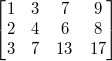
正交 = 垂直？
发表于：2017-9-15
首先讲下正交的定义，我们先来看下向量。向量的正交简单来讲就是当向量A与向量B内积为0时，A与B正交。即是说如果有向量A:
向量B:
它们的内积为0：
这时就说A与B正交。
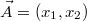
向量B:
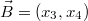
它们的内积为0：
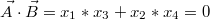
这时就说A与B正交。
什么是投影矩阵
发表于：2017-9-16
投影相信各位都很熟悉，将一条直线投影到一个平面上，可能是一个点，也可能仍然是条直线。那么什么叫投影矩阵？
我们先来看两条向量的投影问题，假设有向量AB和AC：
那么AC投影到AB上的向量，就是过C作AB的垂线，AD就是AC投影到AB上的向量。
我们先来看两条向量的投影问题，假设有向量AB和AC：
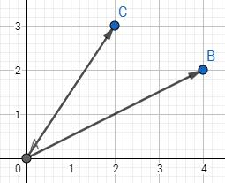
那么AC投影到AB上的向量，就是过C作AB的垂线，AD就是AC投影到AB上的向量。
AX=b无解
发表于：2017-9-17
乍看下，这个问题之前不是提过么？AX=b什么时候无解，可以从行空间消元分析，也可以从秩来分析解的情况。但是今天要讲的是即使AX=b无解，那么求出一个最接近的解也是可以的。问题是怎么求？
这时有人会问为什么要求一个接近的解，我们来举个机器学习常见的例子，比如有三个点A(2,1),B(4,3),C(6,3)，那如果有一个点D其横坐标为7，那么其纵坐标最有可能是多少？
首先看下A，B，C的点的分布情况：
这时有人会问为什么要求一个接近的解，我们来举个机器学习常见的例子，比如有三个点A(2,1),B(4,3),C(6,3)，那如果有一个点D其横坐标为7，那么其纵坐标最有可能是多少？
首先看下A，B，C的点的分布情况：
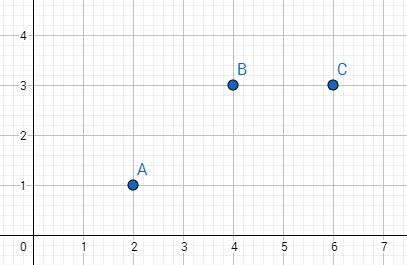
单位正交矩阵与格拉姆-施密特正交化
发表于：2017-9-17
特殊矩阵有好多，包括之前见过的对称矩阵，上三角矩阵，下三角矩阵等等，他们都是因为有了存在的意义才会被推崇。那么单位正交矩阵的好处是什么？使计算变简单。
单位正交矩阵A有以下性质：
1. A转置与A相乘为单位矩阵
2. A转置为A的逆，由性质1就可知
3. A内的各组列向量互相正交，且每个列向量的长度都为1
那么如何让计算简单呢？比如要算最小二乘法：
单位正交矩阵A有以下性质：
1. A转置与A相乘为单位矩阵
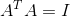
2. A转置为A的逆，由性质1就可知
3. A内的各组列向量互相正交，且每个列向量的长度都为1
那么如何让计算简单呢？比如要算最小二乘法：
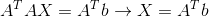
讲讲行列式
行列式首先要了解的是其十大属性：
1. 单位矩阵的行列式值为1，记为：
2. 在行列式里，交换行会改变其正负性，即每换一行其值正负交换一次，举例：
发表于：2017-9-17
十大属性
行列式首先要了解的是其十大属性：
1. 单位矩阵的行列式值为1，记为：
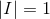
2. 在行列式里，交换行会改变其正负性，即每换一行其值正负交换一次，举例：
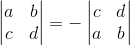
特征值及特征向量
我们首先来看一条公式：
这时，我们可以把λ称为矩阵A的特征值，把x称为矩阵A的特征向量。我们也可以这么说，Ax与x方向平行，而λ是x的长度伸缩大小。同时还有一点需要提起，就是λ可以为0，这时就转换成了Ax=0的问题，也就是求A的零空间了，即其零空间的向量都是λ=0时的特征向量。不过，零向量一般不考虑为特征向量，因为没意义。
比如说下图，AB=(1,1)为矩阵A的特征向量，其特征值为3。
发表于：2017-9-25
定义
我们首先来看一条公式：
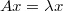
这时，我们可以把λ称为矩阵A的特征值，把x称为矩阵A的特征向量。我们也可以这么说，Ax与x方向平行，而λ是x的长度伸缩大小。同时还有一点需要提起，就是λ可以为0，这时就转换成了Ax=0的问题，也就是求A的零空间了，即其零空间的向量都是λ=0时的特征向量。不过，零向量一般不考虑为特征向量，因为没意义。
比如说下图，AB=(1,1)为矩阵A的特征向量，其特征值为3。
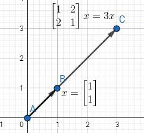
番外篇 · 矩阵的迹&行列式值&特征值三者关系
1. 矩阵的迹(trace)的和与特征值和相等
2. 矩阵的行列式值为特征值的乘积
假定有一矩阵A：
用以下公式可以求出特征值：
发表于：2017-9-24
三者关系
1. 矩阵的迹(trace)的和与特征值和相等
2. 矩阵的行列式值为特征值的乘积
从简单例子出发
假定有一矩阵A：
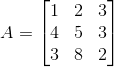
用以下公式可以求出特征值：
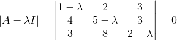